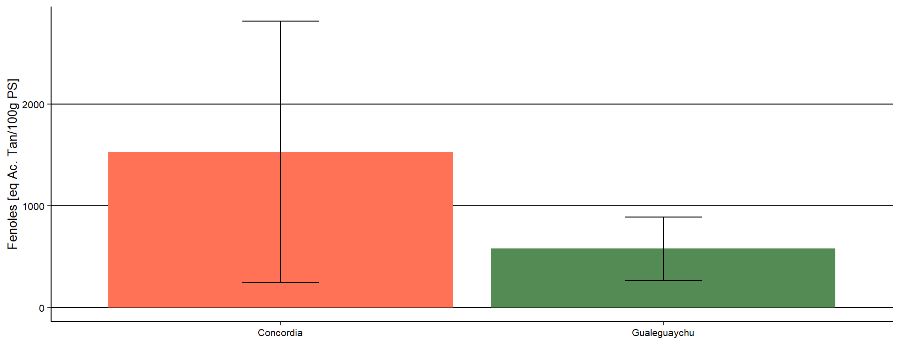
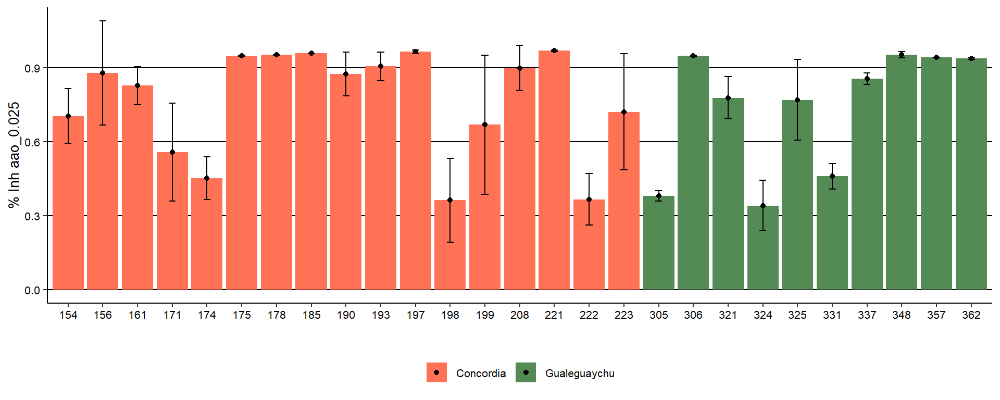
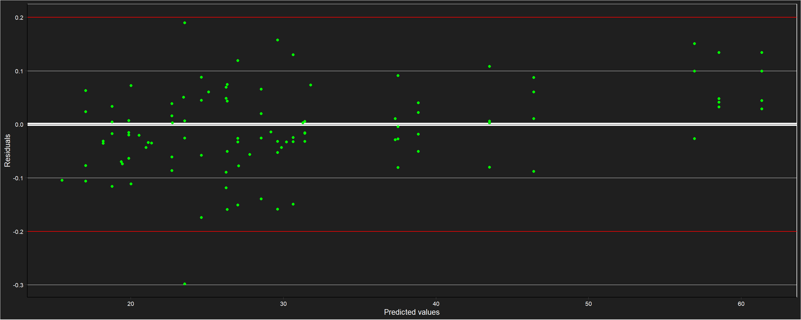
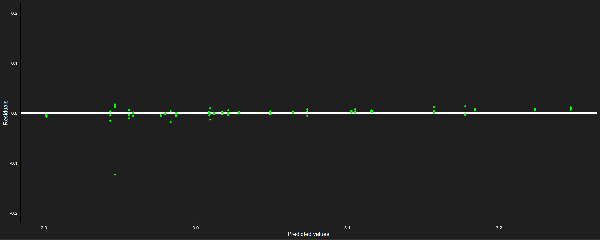

Peso seco
Gráfico de dispersión

Se ajusta el modelo
##
## Call:
## lm(formula = PSF ~ pff, data = datospeso)
##
## Coefficients:
## (Intercept) pff
## 0.175161 0.166136Modelo
##
## Call:
## lm(formula = PSF ~ pff, data = datospeso)
##
## Residuals:
## Min 1Q Median 3Q
## -2.7024141 -0.2603021 -0.0758542 0.2168483
## Max
## 2.8473181
##
## Coefficients:
## Estimate Std. Error t value
## (Intercept) 0.17516125 0.03262740 5.36853
## pff 0.16613606 0.00279221 59.49991
## Pr(>|t|)
## (Intercept) 0.000000095757 ***
## pff < 0.000000000000000222 ***
## ---
## Signif. codes:
## 0 '***' 0.001 '**' 0.01 '*' 0.05 '.' 0.1 ' ' 1
##
## Residual standard error: 0.612434 on 1164 degrees of freedom
## Multiple R-squared: 0.752564, Adjusted R-squared: 0.752351
## F-statistic: 3540.24 on 1 and 1164 DF, p-value: < 0.000000000000000222Descriptiva
Fenoles
Tabla descriptiva por población
## # A tibble: 2 × 4
## site n Mean sd
## <fct> <int> <dbl> <dbl>
## 1 Concordia 64 1532. 1288.
## 2 Gualeguaychu 38 580. 311.Gráfico por población

Tabla descriptiva por fenotipo
## # A tibble: 27 × 5
## # Groups: site [2]
## site phenotype n Mean sd
## <fct> <fct> <int> <dbl> <dbl>
## 1 Concordia 154 4 1507. 122.
## 2 Concordia 156 4 957. 29.8
## 3 Concordia 161 4 587. 133.
## 4 Concordia 171 4 466. 168.
## 5 Concordia 174 3 885. 87.0
## 6 Concordia 175 4 4390. 420.
## 7 Concordia 178 4 3900. 374.
## 8 Concordia 185 4 2245. 332.
## 9 Concordia 190 4 708. 160.
## 10 Concordia 193 4 790. 134.
## # ℹ 17 more rowsGráficos por fenotipo

AAO
0.025
Tabla descriptiva por población
## # A tibble: 2 × 4
## site n Mean sd
## <fct> <int> <dbl> <dbl>
## 1 Concordia 64 0.783 0.228
## 2 Gualeguaychu 38 0.726 0.247Gráfico por población
Tabla descriptiva por fenotipo
## # A tibble: 27 × 5
## # Groups: site [2]
## site phenotype n Mean sd
## <fct> <fct> <int> <dbl> <dbl>
## 1 Concordia 154 4 0.704 0.111
## 2 Concordia 156 4 0.879 0.211
## 3 Concordia 161 4 0.827 0.0772
## 4 Concordia 171 4 0.558 0.199
## 5 Concordia 174 3 0.452 0.0870
## 6 Concordia 175 4 0.948 0.00187
## 7 Concordia 178 4 0.951 0.00160
## 8 Concordia 185 4 0.958 0.00114
## 9 Concordia 190 4 0.874 0.0881
## 10 Concordia 193 4 0.905 0.0572
## # ℹ 17 more rowsGráficos por fenotipo

0.050
Tabla descriptiva por población
## # A tibble: 2 × 4
## site n Mean sd
## <fct> <int> <dbl> <dbl>
## 1 Concordia 63 0.903 0.128
## 2 Gualeguaychu 38 0.846 0.157Gráfico por población
Tabla descriptiva por fenotipo
## # A tibble: 27 × 5
## # Groups: site [2]
## site phenotype n Mean sd
## <fct> <fct> <int> <dbl> <dbl>
## 1 Concordia 154 4 0.950 0.00315
## 2 Concordia 156 4 0.914 0.111
## 3 Concordia 161 4 0.957 0.00312
## 4 Concordia 171 4 0.823 0.109
## 5 Concordia 174 3 0.747 0.0947
## 6 Concordia 175 4 0.954 0.00145
## 7 Concordia 178 4 0.970 0.000801
## 8 Concordia 185 3 0.967 0.00139
## 9 Concordia 190 4 0.949 0.0246
## 10 Concordia 193 4 0.961 0.00108
## # ℹ 17 more rowsGráficos por fenotipo

0.100
Tabla descriptiva por población
## # A tibble: 2 × 4
## site n Mean sd
## <fct> <int> <dbl> <dbl>
## 1 Concordia 63 0.944 0.0625
## 2 Gualeguaychu 38 0.923 0.0710Gráfico por población

Tabla descriptiva por fenotipo
## # A tibble: 27 × 5
## # Groups: site [2]
## site phenotype n Mean sd
## <fct> <fct> <int> <dbl> <dbl>
## 1 Concordia 154 4 0.953 0.00249
## 2 Concordia 156 4 0.934 0.0744
## 3 Concordia 161 4 0.957 0.00312
## 4 Concordia 171 4 0.944 0.0222
## 5 Concordia 174 3 0.944 0.00650
## 6 Concordia 175 4 0.954 0.00145
## 7 Concordia 178 4 0.970 0.000801
## 8 Concordia 185 3 0.962 0.00182
## 9 Concordia 190 4 0.962 0.000858
## 10 Concordia 193 4 0.961 0.00106
## # ℹ 17 more rowsGráficos por fenotipo

0.250
Tabla descriptiva por población
## # A tibble: 2 × 4
## site n Mean sd
## <fct> <int> <dbl> <dbl>
## 1 Concordia 63 0.954 0.0184
## 2 Gualeguaychu 38 0.956 0.00901Gráfico por población

Tabla descriptiva por fenotipo
## # A tibble: 27 × 5
## # Groups: site [2]
## site phenotype n Mean sd
## <fct> <fct> <int> <dbl> <dbl>
## 1 Concordia 154 4 0.953 0.00249
## 2 Concordia 156 4 0.930 0.0692
## 3 Concordia 161 4 0.953 0.00417
## 4 Concordia 171 4 0.956 0.00280
## 5 Concordia 174 3 0.951 0.0112
## 6 Concordia 175 4 0.950 0.000922
## 7 Concordia 178 4 0.957 0.00113
## 8 Concordia 185 3 0.949 0.00277
## 9 Concordia 190 4 0.961 0.000429
## 10 Concordia 193 4 0.960 0.00145
## # ℹ 17 more rowsGráficos por fenotipo

Clorofila a
Tabla descriptiva por población
## # A tibble: 2 × 4
## site n Mean sd
## <fct> <int> <dbl> <dbl>
## 1 Concordia 63 6.42 4.50
## 2 Gualeguaychu 37 25.8 12.5Gráfico por población

Tabla resumen por fenotipo
## # A tibble: 27 × 5
## # Groups: site [2]
## site phenotype n Mean sd
## <fct> <fct> <int> <dbl> <dbl>
## 1 Concordia 154 4 2.36 0.798
## 2 Concordia 156 4 7.29 3.46
## 3 Concordia 161 4 7.51 2.22
## 4 Concordia 171 4 2.38 1.79
## 5 Concordia 174 3 2.86 2.92
## 6 Concordia 175 4 12.9 2.91
## 7 Concordia 178 4 14.3 1.74
## 8 Concordia 185 4 11.3 3.50
## 9 Concordia 190 4 9.85 1.29
## 10 Concordia 193 4 3.30 0.992
## # ℹ 17 more rowsGráfico resumen por fenotipo

Clorofila b
Tabla descriptiva por población
## # A tibble: 2 × 4
## site n Mean sd
## <fct> <int> <dbl> <dbl>
## 1 Concordia 63 10.9 7.66
## 2 Gualeguaychu 37 44.0 21.4Gráfico por población

Tabla resumen por fenotipo
## # A tibble: 27 × 5
## # Groups: site [2]
## site phenotype n Mean sd
## <fct> <fct> <int> <dbl> <dbl>
## 1 Concordia 154 4 4.02 1.37
## 2 Concordia 156 4 12.1 5.63
## 3 Concordia 161 4 12.8 3.73
## 4 Concordia 171 4 3.93 2.84
## 5 Concordia 174 3 4.87 4.97
## 6 Concordia 175 4 22.1 4.97
## 7 Concordia 178 4 24.4 2.96
## 8 Concordia 185 4 19.3 5.97
## 9 Concordia 190 4 16.8 2.20
## 10 Concordia 193 4 5.62 1.70
## # ℹ 17 more rowsGráfico resumen por fenotipo

Carotenoides
Tabla descriptiva por población
## # A tibble: 2 × 4
## site n Mean sd
## <fct> <int> <dbl> <dbl>
## 1 Concordia 63 15.5 6.32
## 2 Gualeguaychu 37 15.4 4.64Gráfico por población

Tabla resumen por fenotipo
## # A tibble: 27 × 5
## # Groups: site [2]
## site phenotype n Mean sd
## <fct> <fct> <int> <dbl> <dbl>
## 1 Concordia 154 4 26.4 2.86
## 2 Concordia 156 4 16.8 7.32
## 3 Concordia 161 4 19.3 4.49
## 4 Concordia 171 4 23.3 5.85
## 5 Concordia 174 3 13.1 1.62
## 6 Concordia 175 4 9.83 2.20
## 7 Concordia 178 4 10.6 1.42
## 8 Concordia 185 4 8.45 1.71
## 9 Concordia 190 4 20.9 3.35
## 10 Concordia 193 4 17.8 4.50
## # ℹ 17 more rowsGráfico resumen por fenotipo

Acidez Total Titulable (ATT)
## # A tibble: 2 × 4
## site n Mean sd
## <fct> <int> <dbl> <dbl>
## 1 Concordia 29 1.41 0.678
## 2 Gualeguaychu 15 0.353 0.235Gráfico por población

Tabla resumen por fenotipo
## # A tibble: 27 × 5
## # Groups: site [2]
## site phenotype n Mean sd
## <fct> <fct> <int> <dbl> <dbl>
## 1 Concordia 154 1 1.37 NA
## 2 Concordia 156 1 0.79 NA
## 3 Concordia 161 1 1.48 NA
## 4 Concordia 171 4 2.25 0.345
## 5 Concordia 174 3 1.98 0.217
## 6 Concordia 175 1 0.76 NA
## 7 Concordia 178 1 0.52 NA
## 8 Concordia 185 1 0.73 NA
## 9 Concordia 190 1 0.96 NA
## 10 Concordia 193 1 1.74 NA
## # ℹ 17 more rowsGráfico resumen por fenotipo

Sólidos solubles
Tabla descriptiva por población
## # A tibble: 2 × 4
## site n Mean sd
## <fct> <int> <dbl> <dbl>
## 1 Concordia 29 9.58 2.15
## 2 Gualeguaychu 15 6.69 1.21Gráfico por población

Tabla resumen por fenotipo
## # A tibble: 27 × 5
## # Groups: site [2]
## site phenotype n Mean sd
## <fct> <fct> <int> <dbl> <dbl>
## 1 Concordia 154 1 8.3 NA
## 2 Concordia 156 1 8.2 NA
## 3 Concordia 161 1 8.3 NA
## 4 Concordia 171 4 11.1 0.75
## 5 Concordia 174 3 10.4 0.833
## 6 Concordia 175 1 13.1 NA
## 7 Concordia 178 1 13 NA
## 8 Concordia 185 1 12.1 NA
## 9 Concordia 190 1 10.9 NA
## 10 Concordia 193 1 8.4 NA
## # ℹ 17 more rowsGráfico resumen por fenotipo

Relación ATT y SS
Tabla descriptiva por población
## # A tibble: 2 × 4
## site n Mean sd
## <fct> <int> <dbl> <dbl>
## 1 Concordia 29 0.148 0.0621
## 2 Gualeguaychu 15 0.0557 0.0450Gráfico por población

Tabla resumen por fenotipo
## # A tibble: 27 × 5
## # Groups: site [2]
## site phenotype n Mean sd
## <fct> <fct> <int> <dbl> <dbl>
## 1 Concordia 154 1 0.165 NA
## 2 Concordia 156 1 0.0963 NA
## 3 Concordia 161 1 0.178 NA
## 4 Concordia 171 4 0.204 0.0342
## 5 Concordia 174 3 0.191 0.00659
## 6 Concordia 175 1 0.0580 NA
## 7 Concordia 178 1 0.04 NA
## 8 Concordia 185 1 0.0603 NA
## 9 Concordia 190 1 0.0881 NA
## 10 Concordia 193 1 0.207 NA
## # ℹ 17 more rowsGráfico resumen por fenotipo

Dispersión Acidez y Sólidos Solubles


Análisis univariado
Estadística inferencial - Análisis de CCI
Fenoles
Supuestos del modelo 
Resumen del modelo
## Generalized linear mixed model fit by maximum
## likelihood (Laplace Approximation) [glmerMod]
## Family: Gamma ( identity )
## Formula: sqrt(Fenoles) ~ (1 | site/phenotype/id)
## Data: database
##
## AIC BIC logLik deviance df.resid
## 569.2 582.3 -279.6 559.2 97
##
## Scaled residuals:
## Min 1Q Median 3Q Max
## -1.864527 -0.354259 -0.112751 0.309394 1.394469
##
## Random effects:
## Groups Name Variance
## id:(phenotype:site) (Intercept) 19.1072977425779129
## phenotype:site (Intercept) 70.0900998589083883
## site (Intercept) 0.0000000000109995
## Residual 0.0209059067996396
## Std.Dev.
## 4.37118951117
## 8.37198303026
## 0.00000331654
## 0.14458875060
## Number of obs: 102, groups:
## id:(phenotype:site), 40; phenotype:site, 27; site, 2
##
## Fixed effects:
## Estimate Std. Error t value
## (Intercept) 39.3543 4.0729 9.66249
## Pr(>|z|)
## (Intercept) < 0.000000000000000222 ***
## ---
## Signif. codes:
## 0 '***' 0.001 '**' 0.01 '*' 0.05 '.' 0.1 ' ' 1
## optimizer (Nelder_Mead) convergence code: 0 (OK)
## boundary (singular) fit: see help('isSingular')Componentes de varianza (%)
## [1] 1.12200856## [1] 33.9163169## [1] 64.9616576## [1] 0.000016861166.025
Supuestos del modelo

Resumen del modelo
## Family: beta ( logit )
## Formula: aao_0.025 ~ (1 | site/phenotype/id)
## Data: database
##
## AIC BIC logLik deviance df.resid
## -146.8 -133.7 78.4 -156.8 97
##
## Random effects:
##
## Conditional model:
## Groups Name Variance
## id:phenotype:site (Intercept) 0.165392783330290
## phenotype:site (Intercept) 1.241254034367889
## site (Intercept) 0.000000000764777
## Std.Dev.
## 0.4066851157
## 1.1141158083
## 0.0000276546
## Number of obs: 102, groups:
## id:phenotype:site, 39; phenotype:site, 27; site, 2
##
## Dispersion parameter for beta family (): 15.1
##
## Conditional model:
## Estimate Std. Error z value
## (Intercept) 1.391943 0.238595 5.83391
## Pr(>|z|)
## (Intercept) 0.0000000054143 ***
## ---
## Signif. codes:
## 0 '***' 0.001 '**' 0.01 '*' 0.05 '.' 0.1 ' ' 1Componentes de varianza (%)
## [1] 1.12200856## [1] 33.9163169## [1] 64.9616576## [1] 0.000016861166.05
Supuestos del modelo

Resumen del modelo
## Family: beta ( logit )
## Formula: aao_0.05 ~ (1 | site/phenotype/id)
## Data: database
##
## AIC BIC logLik deviance df.resid
## -303.7 -290.6 156.8 -313.7 96
##
## Random effects:
##
## Conditional model:
## Groups Name Variance
## id:phenotype:site (Intercept) 1.0089877650039
## phenotype:site (Intercept) 0.2404205292564
## site (Intercept) 0.0000000017993
## Std.Dev.
## 1.0044838301
## 0.4903269616
## 0.0000424182
## Number of obs: 101, groups:
## id:phenotype:site, 39; phenotype:site, 27; site, 2
##
## Dispersion parameter for beta family (): 75.3
##
## Conditional model:
## Estimate Std. Error z value
## (Intercept) 2.189318 0.218761 10.0078
## Pr(>|z|)
## (Intercept) < 0.000000000000000222 ***
## ---
## Signif. codes:
## 0 '***' 0.001 '**' 0.01 '*' 0.05 '.' 0.1 ' ' 1Componentes de varianza (%)
## [1] 1.12200856## [1] 33.9163169## [1] 64.9616576## [1] 0.0000168611660.1
Supuestos del modelo

Resumen del modelo
## Family: beta ( logit )
## Formula: aao_0.1 ~ (1 | site/phenotype/id)
## Data: database
##
## AIC BIC logLik deviance df.resid
## -398.5 -385.5 204.3 -408.5 96
##
## Random effects:
##
## Conditional model:
## Groups Name Variance
## id:phenotype:site (Intercept) 0.3710858917394892
## phenotype:site (Intercept) 0.0228808769877920
## site (Intercept) 0.0000000000427356
## Std.Dev.
## 0.60916819659
## 0.15126426210
## 0.00000653725
## Number of obs: 101, groups:
## id:phenotype:site, 39; phenotype:site, 27; site, 2
##
## Dispersion parameter for beta family (): 94.4
##
## Conditional model:
## Estimate Std. Error z value
## (Intercept) 2.730981 0.118068 23.1306
## Pr(>|z|)
## (Intercept) < 0.000000000000000222 ***
## ---
## Signif. codes:
## 0 '***' 0.001 '**' 0.01 '*' 0.05 '.' 0.1 ' ' 1.25
Supuestos del modelo 
Resumen del modelo
## Family: beta ( logit )
## Formula: aao_0.25 ~ (1 | site/phenotype/id)
## Data: database
##
## AIC BIC logLik deviance df.resid
## -606.0 -592.9 308.0 -616.0 96
##
## Random effects:
##
## Conditional model:
## Groups Name
## id:phenotype:site (Intercept)
## phenotype:site (Intercept)
## site (Intercept)
## Variance Std.Dev.
## 0.00000000089092158446413615468 0.00002984830957465
## 0.01605853518331238488636714123 0.12672227579755813
## 0.00000000000000000000000437042 0.00000000000209055
## Number of obs: 101, groups:
## id:phenotype:site, 39; phenotype:site, 27; site, 2
##
## Dispersion parameter for beta family (): 378
##
## Conditional model:
## Estimate Std. Error z value Pr(>|z|)
## (Intercept) 3.05358 NaN NaN NaN